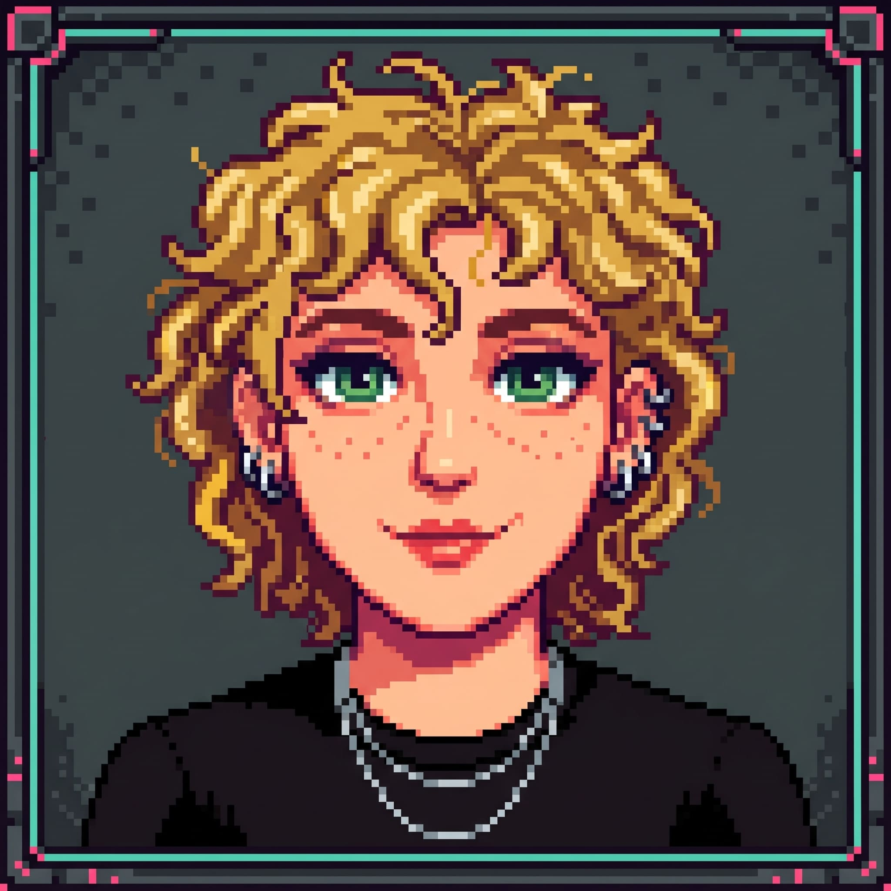

Convergência de gradiente em MLPs
Iniciação científica sobre o comportamento do Gradiente Descendente e do Estocástico no treino de redes Perceptron, com dados do TMDB via API oficial.
PythonOtimizaçãoEm andamento
Estudo Estatística na UNICAMP e gosto de transformar dados em respostas claras. Aqui estão meus projetos, meus códigos e as formas de falar comigo.

Me chamo Maria Eduarda Villéla Silva, sou estudante do Instituto de Matemática, Estatística e Computação Científica (IMECC) da UNICAMP.
Estou construindo minha carreira em ciência de dados: gosto de transformar dados brutos em respostas claras, com código reprodutível e boa visualização.
Estudo métodos de otimização que, combinados com análise e visualização de dados, formam o combo perfeito para tomadas de decisão confiáveis.
Este site começou como a vitrine dos desafios de uma disciplina e virou meu portfólio.
Iniciação científica sobre o comportamento do Gradiente Descendente e do Estocástico no treino de redes Perceptron, com dados do TMDB via API oficial.
Detecção com YOLOv8n e pós-processamento escrito à mão em Python, analisando como os limiares de confiança e IoU afetam os erros do modelo.
Rede Seq2Seq com atenção que converte datas de vários formatos para o padrão ISO 8601, com análise dos mapas de atenção e de configurações da rede.
Análise exploratória das músicas mais ouvidas do ano: playlists, charts, lançamentos, positividade e dançabilidade. Virou pôster científico na universidade.
Projeto de aprendizado de máquina que classifica dígitos manuscritos a partir de imagens, com notebook, script e relatório final do trabalho.
Quinze desafios de manipulação de banco de dados, com código e resultados, mais um trabalho final apresentado em slides e um mapa interativo.